Filter Rules Reference
This page documents all the filter patterns used in the library, including SMARTS strings and visual representations of each pattern.
Note
Each filter pattern includes:
Pattern name: The identifier used in the code
SMARTS string: The chemical pattern definition
Description: What the pattern identifies
Visual representation: RDKit-generated structure drawing
The images shown are generated directly from the SMARTS patterns using RDKit, providing an accurate visual representation of the substructures being matched.
Overview
The library includes four main filter types:
Filter Type |
Pattern Count |
Description |
|---|---|---|
PAINS Filter |
19 patterns |
Identifies Pan-Assay Interference Compounds that frequently show up as false positives in high-throughput screens |
Reactive Filter |
22 patterns |
Detects chemically reactive functional groups that may cause issues in biological assays or drug development |
Heterocycle Filter |
31 patterns |
Identifies common heterocyclic scaffolds in medicinal chemistry |
Property Filter |
N/A |
Filters molecules based on calculated properties (MW, LogP, TPSA, HBD, HBA, rotatable bonds, aromatic rings) |
Total SMARTS Patterns: 72 patterns with visual representations
PAINS Patterns
Pan-Assay Interference Compounds (PAINS) are molecules that frequently show up as hits in high-throughput screens but are likely false positives. These patterns identify problematic structures.
Quinones and Derivatives
Catechols
Michael Acceptors
Rhodanines

Other PAINS
- barbiturate:
O=C1CC(=O)NC(=O)N1 Alkylidene barbiturate
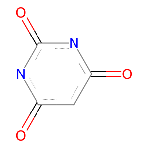- phenol_hydrazone:
c1cc(O)ccc1N=N Hydroxyphenyl hydrazone
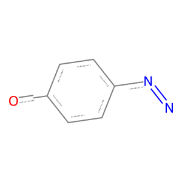- mannich_phenol:
c1cc(O)c(CN)cc1 Phenolic Mannich base
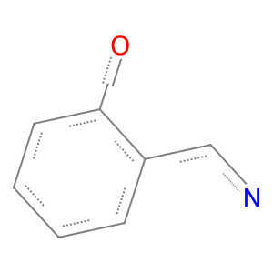- curcumin:
O=C(C=C)C=C(C=C)C(=O) Curcumin-like structure
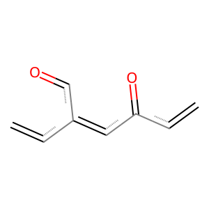- beta_lactam:
C1C(=O)NC1 Beta-lactam ring
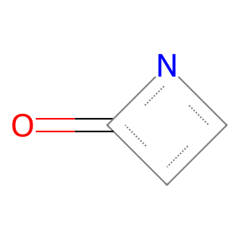- styrene:
C=Cc1ccccc1 Styrene pattern
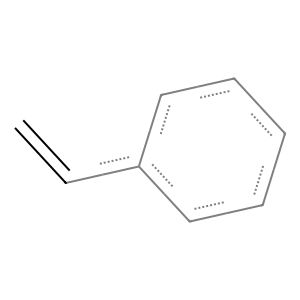- nitro_aromatic:
c1ccc([N+](=O)[O-])cc1 Nitro aromatic
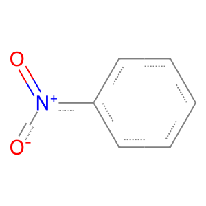- azo:
cN=Nc Azo compound
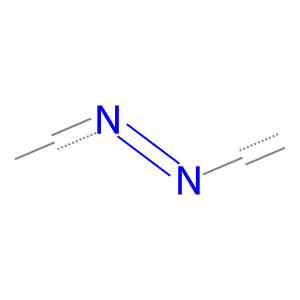- thiourea:
NC(=S)N Thiourea
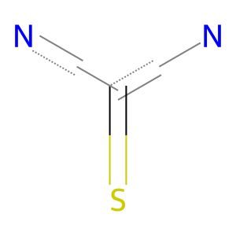- isothiocyanate:
N=C=S Isothiocyanate
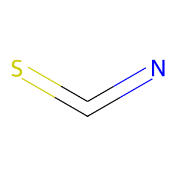
Reactive Patterns
These patterns identify chemically reactive functional groups that may cause issues in biological assays.
Electrophiles
- acyl_halide:
[C;!$(C-[OH])][C;X3](=[OX1])[F,Cl,Br,I] Acyl halide
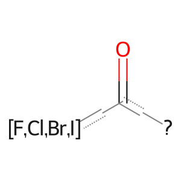- aldehyde:
[CX3H1](=O)[#6] Aldehyde group
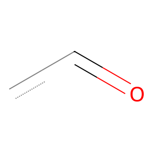- alkyl_halide:
[CX4][F,Cl,Br,I] Alkyl halide
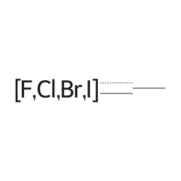- anhydride:
[CX3](=[OX1])[OX2][CX3](=[OX1]) Anhydride
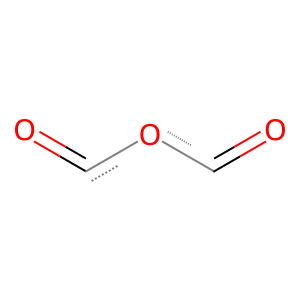- epoxide:
C1OC1 Epoxide (oxirane)
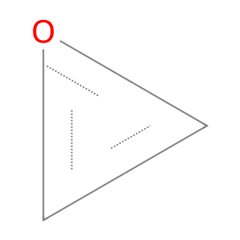- isocyanate:
N=C=O Isocyanate
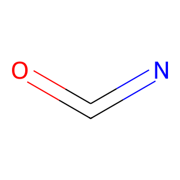- sulfonyl_halide:
[SX4](=[OX1])(=[OX1])[F,Cl,Br,I] Sulfonyl halide
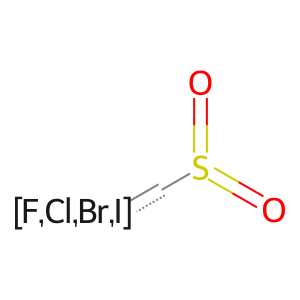
Michael Acceptors
Peroxides
Diazo Compounds
Other Reactive Groups
- sulfonyl_chloride:
S(=O)(=O)Cl Sulfonyl chloride
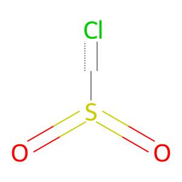- phosphoryl_halide:
P(=O)[F,Cl,Br,I] Phosphoryl halide
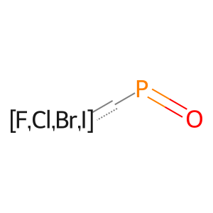- phosphonate:
P(=O)(O)(O) Phosphonate
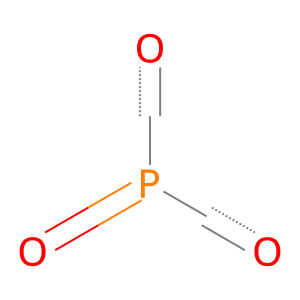- hydroxamic_acid:
C(=O)N(O) Hydroxamic acid
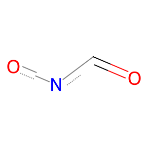- thiol:
[SH] Thiol (sulfhydryl)
- azide:
N=[N+]=[N-] Azide
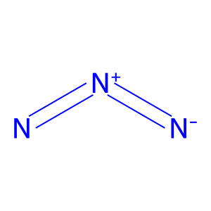- crown_ether:
C1COCCOCCOCCOC1 Crown ether pattern
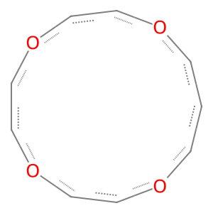- hydrazine:
N-N Hydrazine
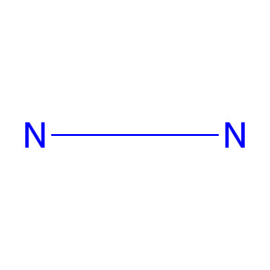
Heterocycle Patterns
These patterns identify common heterocyclic scaffolds in medicinal chemistry.
Five-Membered Rings (One Heteroatom)
Five-Membered Rings (Two Heteroatoms)
Six-Membered Rings (One Heteroatom)
- pyridine:
c1ccncc1 Pyridine

- pyran:
C1CCOCC1 Pyran
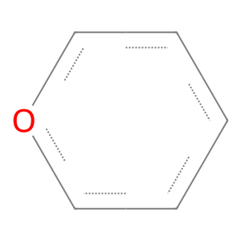
Six-Membered Rings (Two Heteroatoms)
Six-Membered Rings (Three Heteroatoms)
Fused Bicyclic Systems
- indole:
c1ccc2[nH]ccc2c1 Indole
- benzofuran:
c1ccc2occc2c1 Benzofuran
- benzothiophene:
c1ccc2sccc2c1 Benzothiophene
- benzimidazole:
c1ccc2[nH]cnc2c1 Benzimidazole
- quinoline:
c1ccc2ncccc2c1 Quinoline
- isoquinoline:
c1ccc2cnccc2c1 Isoquinoline
- quinazoline:
c1ccc2ncncc2c1 Quinazoline
- quinoxaline:
c1ccc2nccnc2c1 Quinoxaline
- purine:
c1nc2[nH]cnc2n1 Purine
Saturated Heterocycles

{kind=link}
{kind=link}
{kind=link}
{kind=link}
{kind=link}
{kind=link}
{kind=link}
{kind=link}
{kind=link}
{kind=link}
{kind=link}
{kind=link}
{kind=link}
{kind=link}
{kind=link}
{kind=link}
{kind=link}
{kind=link}
{kind=link}
{kind=link}
{kind=link}
{kind=link}
{kind=link}
{kind=link}
{kind=link}
{kind=link}
{kind=link}
{kind=link}
{kind=link}
{kind=link}
{kind=link}
{kind=link}
{kind=link}
{kind=link}
{kind=link}
{kind=link}
{kind=link}
{kind=link}
{kind=link}
{kind=link}
{kind=link}
{kind=link}
{kind=link}
{kind=link}
{kind=link}
{kind=link}
{kind=link}
{kind=link}
{kind=link}
{kind=link}
{kind=link}
{kind=link}
{kind=link}
{kind=link}
{kind=link}
{kind=link}
{kind=link}
{kind=link}
{kind=link}
{kind=link}
{kind=link}
{kind=link}
{kind=link}
{kind=link}
{kind=link}
{kind=link}
{kind=link}
Seven-Membered Rings
{kind=link}
{kind=link}
Property Ranges
Common property ranges used in drug discovery:
Lipinski’s Rule of Five
Molecular Weight: ≤ 500 Da
LogP: ≤ 5
HBD: ≤ 5
HBA: ≤ 10
Veber’s Rules
Rotatable Bonds: ≤ 10
TPSA: ≤ 140 Ų
Lead-like Properties
Molecular Weight: 200-350 Da
LogP: 1-3
HBD: ≤ 3
HBA: ≤ 6
Drug-like Properties
Molecular Weight: 200-500 Da
LogP: -1 to 5
HBD: 0-5
HBA: 0-10
TPSA: 20-140 Ų
Rotatable Bonds: ≤ 10